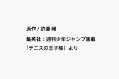
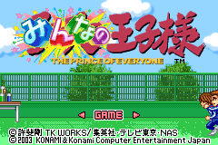
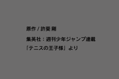
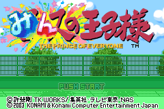

Minna no Ouji-sama (Japan)
Stateless / Passcode Debug Menu Patch 🎮 Button Cheat 📺 Joybus 💾 MultiBoot 🎮 4P Link
Cartridge Identity
- Game Code
BMOJ(FamilyBMO)- Header Title
KCEJ MINPRI- Maker / Revision
A4/ rev0- ROM Size
- 32.0 MiB (33,554,432 B)
- Save Media
None / Unknown- SHA-256
57381312afaad22b7d4a48f7e1a009f08e0bed770d847da7d09300b3174fb7d5- Engine / SDK Group
comm-014(25 families)
Screenshots


Debug Menu Re-Enablement Patch (.ips)
Download BMOJ-debug.ips (17 B IPS / 4 B delta)
- Hook Mechanism
reset_vector_literal_override· Patch reset vector entry pointer literal at 0x08000104 to boot directly into Konami developer debug menu (< TP2004:DEBUG MENU > at 0x09B00E80)- IPS SHA-256
5cedfbe82f3588fba1ba4ea83f404df9c12e956e415a75be2f2fe04886a8344b
gbakit patch apply BMOJ-debug.ips original.gba patched-debug.gba

Verified Button-Combo Cheat
Zero-patch retail controller cheat (Wave 3): 4-way counterfactually verified in headless
libmgba. See all verified titles in the Button-Combo Cheats Catalog.
- Effect
- Hidden Controller Sequence Unlock (ROM table 0x09bc7f44)
- Button Sequence
UP, UP, DOWN, DOWN, L, R, L, R, B, SELECT- Verification Verdict
- Visual + RAM Unique Reaction
- Target RAM Address
0x030004E4- ROM Table Address
0x09bc7f44- Timing Protocol
boot=540f,hold=6f,release=6f,settle=60f- Activation Indicator
- Headless libmgba 4-way counterfactual verified: unique 240x160 framebuffer and RAM/VRAM state transition distinct from control, wrong, and reversed inputs
gbakit cheat verify BMOJ

Link Cable & Multiplayer Communications
This title contains detected communication capabilities: 📺 Joybus 💾 MultiBoot 🎮 4P Link.
Detailed protocol specifications, SIO registers, Joybus commands, and MultiBoot sequences are documented in the Link & Multiplayer Reference.
- Multi-Player SIO (4P)
- 16-bit ring network · SIOCNT (
0x04000128) literals:0x000540,0x0005c0,0x0005ec· SIODATA32/SIOMULTI0 (0x04000120) literals:0x000a98 - GameCube Joybus
- Register literal
REG_JOYCNT(0x04000140) at offset0x02a0e8 - GameCube Joybus
- Register literal
REG_JOYCNT(0x04000140) at offset0x0678a0 - GameCube Joybus
- Register literal
REG_JOY_RECV(0x04000150) at offset0x038638 - Single-Cart MultiBoot
- Single-Cartridge MultiBoot (Download Play) client/server handler · Thumb SWI 0x25 (
0xDF25):0x1c96a0,0xf36500,0xf36f58,0xf89da0
Cartridge Storage Architecture: Stateless / Passcode
Zero non-volatile battery hardware: This cartridge PCB contains ROM only (no SRAM, Flash, or EEPROM chips). Progression is preserved via on-screen passcodes or session-only gameplay. No
.sav file is generated or required.
ROM Assets, Compression & Audio
- BIOS Compression
- LZ77 (
0x10): 143 streams · RLE (0x30): 0 streams - ROM Pointer Tables
- 66 tables (1 pointing to validated compressed streams)
- SDK Backup Tags
SRAM_F_V103,SRAM_F_V103
Text, Fonts & Scene Data
- Primary Text Encoding
- Shift-JIS (uncompressed) (
42ASCII strings ·112Shift-JIS runs) - Font & VWF Indicators
- VWF Width Table 1bpp Font · BIOS SWIs: BitUnPack
0x10:1· LZ770x11/12:3· Huffman0x13:0· RLE0x14/15:3 - Scene & Packaging
54ROM pointer tables (≥32 entries,2≥200) ·92relativeu32TOCs ·123OAM metasprite hits · FourCC:KCEJ
Password System
- Save Media
- Battery-Backed (SRAM)
- Password Class
- Candidate Static Password Table (
candidate_static_table_no_ui) - Static Table(s)
0x1c46790
Hardware MMIO Subsystems
ppu_display0x8006f30,0x800a8bc,0x800ff70,0x8010200,0x801605c,0x806bf2c,0x8071158,0x8072064save_bus_sram_flash0x8002738,0x80027a4